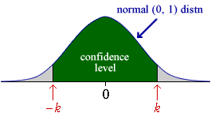

| p ± 1.96 |
Other confidence levels
An approximate 95% confidence interval for a population proportion (probability) has the form
| p ± 1.96 |
Different confidence levels are achieved by replacing '1.96' by other constants, giving a confidence interval of the form
| p ± k |
The relationship between k and the confidence level is determined by the standard normal distribution,

The table below gives some examples of k and the resulting confidence level.
| k | Confidence level |
|---|---|
| 1 | 0.683 |
| 2 | 0.954 |
| 3 | 0.997 |
| 1.645 | 0.90 |
| 1.960 | 0.95 |
| 2.576 | 0.99 |
Although 95% confidence intervals are most commonly reported, sometimes k is chosen to give a 90% or 99% confidence interval.